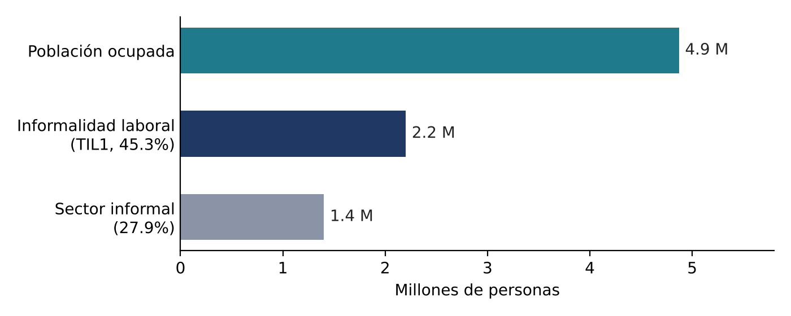
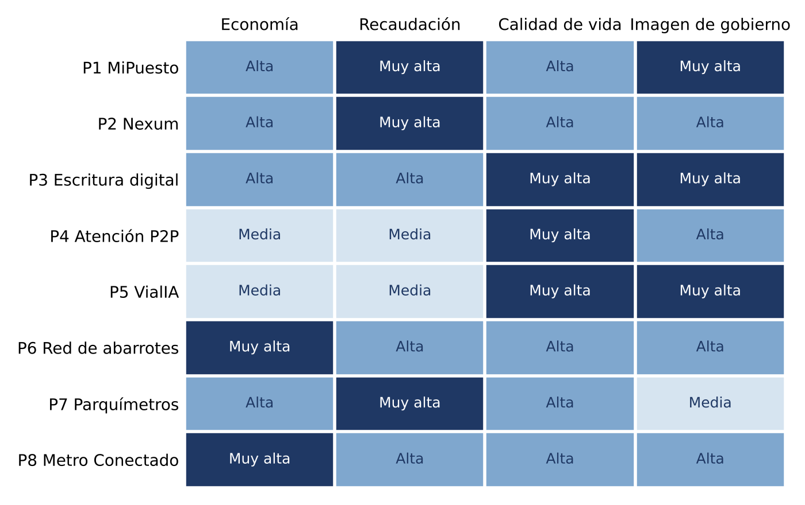
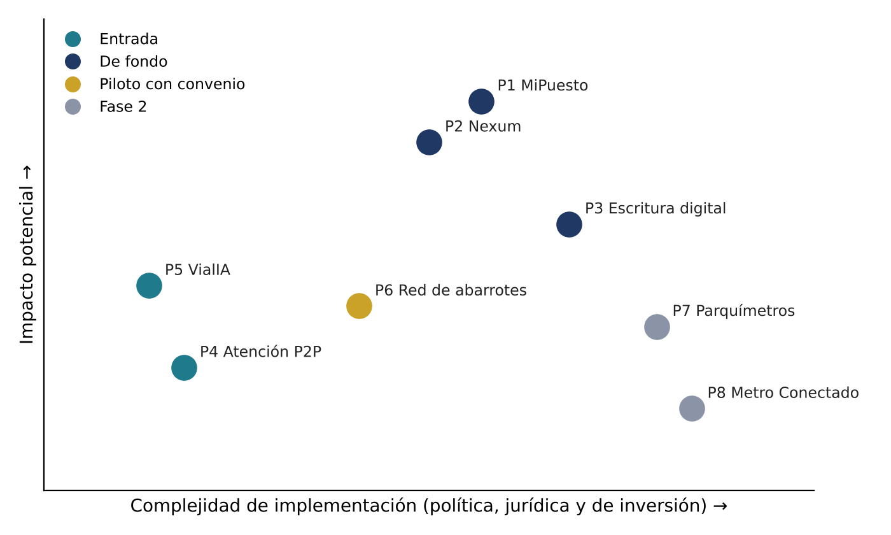

Ciudad de México Digital y Próspera
Estudio de oportunidades y portafolio de ocho proyectos tecnológicos de orden del espacio público, certeza patrimonial, recaudación, servicios urbanos y movilidad para el Gobierno de la Ciudad de México
Resumen Ejecutivo
Un momento fiscal favorable y retos visibles que la tecnología puede ordenar
| En el primer semestre de 2026 la Ciudad recaudó más de 183 mil millones de pesos, 12% por encima de lo previsto en su Ley de Ingresos; sus ingresos tributarios locales crecieron 9.5% hasta 67,922 millones, el predial creció 23.7% y el impuesto sobre nómina 16.4% [1]. La inversión pública del primer semestre superó los 17 mil millones de pesos, 156% más que en el mismo periodo de 2025 [1]. |
| La Jefa de Gobierno anunció en su Segundo Informe que el predial no subirá y que en 2027 se eliminarán multas y recargos por adeudos [2]. El crecimiento de la recaudación tendrá que venir de ampliar la base, facilitar el pago y reducir la fuga, no de subir tasas: eso es justo lo que resuelven los proyectos de esta propuesta. |
| 45.3% de la población ocupada trabaja en la informalidad (2.2 millones de personas) [4] |
| 2026 fue declarado el año del reordenamiento del comercio en vía pública, pero no existe un censo oficial de comerciantes [5] |
| Al menos 294,660 viviendas propias no tienen escrituras [8] |
| Cientos de miles de baches atendidos con programas masivos, pero de forma reactiva [10][11] |
| El Metro movió 1,241 millones de viajes en 2025 [17] con una explotación comercial todavía limitada |
| Frente | Proyectos incluidos |
|---|---|
| Orden del espacio público y economía popular | MiPuesto CDMX, padrón y permiso digital del comercio en vía pública (P1), y Red de abarrotes conectada, que digitaliza pagos, vales y servicios en la tienda de barrio (P6) |
| Certeza patrimonial y recaudación | Nexum, regularización predial y catastral (P2), y Escritura digital con alerta contra despojo (P3) |
| Atención ciudadana y servicios urbanos | Atención ciudadana por video P2P (P4) y VialIA, detección de baches con IA (P5) |
| Movilidad e ingresos no tarifarios | Parquímetros digitales con empleo social (P7) y Metro Conectado, Wi-Fi y medios digitales (P8) |
| Entrada | VialIA y Atención P2P: bajo riesgo, piloto sin costo y resultados visibles en semanas |
| De fondo | MiPuesto y Nexum, con la escritura digital como extensión natural |
| Piloto con convenio | La red de abarrotes puede arrancar aprovechando la red de más de 30 mil comercios ya registrados en Mercomuna [24] y la recién aprobada Ley de Economía Digital [22] |
| Segunda fase | Parquímetros y Metro Conectado, con socio financiero y la confianza construida en los primeros proyectos |
| Inversión privada | La mayor parte de la inversión la aportan el equipo proponente y sus socios, y se recupera con comisiones, servicios y concesiones, no con presupuesto de la Ciudad |
| Grupo CSI | Empresa que se presenta como especialista en identidad digital, contact center omnicanal, fábrica de software, mesa de ayuda y gestión documental para banca y gobierno [28]. Sus capacidades cubren piezas críticas del portafolio: verificación de identidad para padrones (P1, P2, P3), operación de centros de atención (P4) y digitalización de expedientes (P2, P3) |
Alcance y Metodología
Cuatro pasos del estudio y limitaciones declaradas
| 1 | Revisión del contexto institucional y de las prioridades públicas de la administración |
| 2 | Diagnóstico de los problemas que atiende cada proyecto, con datos verificables |
| 3 | Revisión de lo que la Ciudad ya tiene en operación (Llave CDMX, Locatel y Bachetel, ecoParq, Mercomuna, Wi-Fi gratuito, concesiones del Metro) para complementar y no duplicar |
| 4 | Construcción de cada ficha con su lógica de mercado, modelo de negocio, piloto y riesgos |
| No se tuvo acceso a datos internos de recaudación, padrones ni contratos vigentes. Las estimaciones económicas son escalas y escenarios de trabajo, no pronósticos |
| Algunas cifras de mercado provienen de los estudios del propio equipo [27] y se marcan como estimación del equipo, por validar, cuando no tienen una fuente oficial independiente |
| Varias cifras periodísticas reproducen datos oficiales; antes de citarlas en un documento formal deben confirmarse con la dependencia correspondiente |
| El Anexo A propone un cuestionario para completar el diagnóstico con las dependencias |
| Por indicación del equipo, este documento no fija un calendario: las fechas las define la Jefatura de Gobierno según sus prioridades. Los pilotos se describen por su duración típica, no por fechas |
Diagnóstico de la Ciudad
Contexto institucional, finanzas, economía, espacio público, patrimonio, vialidades, Metro, gobierno digital y marco federal
| Elemento | Detalle |
|---|---|
| Periodo de gobierno | Clara Brugada Molina es Jefa de Gobierno de la Ciudad de México desde el 5 de octubre de 2024 y su periodo concluye en octubre de 2030, por lo que la ventana de ejecución restante es de poco menos de cuatro años |
| Prioridades de la administración | Inversión pública, recuperación del espacio público, vivienda y seguridad de las mujeres. En su Segundo Informe reportó 3,600 obras en el espacio público, 30 nuevas Utopías en avance, 450 km de repavimentación con unos 4,000 millones de pesos, 643 obras de agua y drenaje y más de 200 mil luminarias instaladas en 200 Caminos de Mujeres Libres y Seguras [3] |
| Regularización y despojo | Anunció el programa de regularización de inmuebles más grande de la capital, junto con una Defensoría Jurídica de la Propiedad y contra el Despojo [9] |
| Dependencias clave | Secretaría de Administración y Finanzas (SAF) y Tesorería; Secretaría de Gobierno y su Subsecretaría de Programas de Alcaldías y Reordenamiento en Vía Pública; Secretaría de Obras y Servicios (Sobse); Secretaría de Movilidad (Semovi) y ecoParq; Sistema de Transporte Colectivo (STC) Metro; Agencia Digital de Innovación Pública (ADIP); Locatel; Consejería Jurídica y de Servicios Legales; Registro Público de la Propiedad y de Comercio; y las 16 alcaldías |
| Indicador | Dato | Fuente |
|---|---|---|
| Ingresos totales, 1er semestre 2026 | Más de 183 mil millones de pesos (12% sobre la Ley de Ingresos) | [1] |
| Ingresos tributarios locales, 1er semestre 2026 | 67,922 millones de pesos (+9.5%) | [1] |
| Predial | Récord; crecimiento de 23.7% | [1] |
| Impuesto sobre nómina | Récord; crecimiento de 16.4% | [1] |
| Ingresos locales 2025 | 151 mil millones de pesos | [2] |
| Inversión pública, 1er semestre 2026 | Más de 17 mil millones de pesos (+156%) | [1] |
| Política predial 2027 | Sin aumento; eliminación de multas y recargos | [2] |
| Lectura | El Programa de Regularización Fiscal benefició a más de 186 mil contribuyentes y recaudó más de mil millones de pesos, por lo que se amplió tres meses [1]. La Ciudad responde bien cuando se facilita el cumplimiento. Con el compromiso de no subir el predial y de eliminar multas y recargos en 2027 [2], la siguiente palanca es tecnológica: incorporar predios y contribuyentes que hoy no están en el padrón y reducir el costo de pagar | |

| Buena parte de esa economía se mueve en efectivo: a nivel nacional, 85.5% de las compras menores a 500 pesos todavía se pagan en efectivo, aunque la proporción viene bajando (90.1% en 2021) [23]. Las tiendas de barrio, por su parte, enfrentan presión: 77.5% de los tenderos considera que su negocio está en riesgo de cerrar, la extorsión representa 20.1% de los delitos que sufren y 53% de las tiendas las atienden mujeres [25] |
| Reordenamiento 2026 | La Jefa de Gobierno declaró 2026 como el año del reordenamiento del comercio informal. En la primera fase se fijó la meta de liberar las calles del Centro Histórico de 4,500 comerciantes [5]. En la Alameda Central el número de vendedores bajó de 150 a 75 en tres semanas tras acuerdos con colectivos, a los que el gobierno ofreció locales en estaciones del Metro [6]; la mayoría de los grupos aceptó alternativas, pero tres organizaciones se mantienen en resistencia [7] |
| El problema de fondo | Es de información: no existe un censo público y oficial de comerciantes en vía pública; el último registro conocido de la Subsecretaría de Reordenamiento, de 2022, contabilizaba 11,542 puntos de comercio y la propia Secretaría de Gobierno reconoce que sus registros son parciales [5]. El estudio del equipo estima entre 350 mil y 550 mil comerciantes en toda la Ciudad, con 64% de mujeres [27]. Sin un padrón confiable, el reordenamiento depende de negociaciones caso por caso y la recaudación por uso de vía pública se queda en intermediarios |
| Sin escrituras | Según la ENIGH 2024, al menos 294,660 viviendas propias en la Ciudad no tienen escrituras, 16.5% del total de viviendas propias. Escriturar cuesta entre 5% y 8% del valor del inmueble (impuesto de adquisición, derechos registrales, certificados, avalúo y honorarios), y la inscripción en el Registro Público tarda entre tres semanas y tres meses [8]. La Jornada Notarial ofrece descuentos de 10% a 60% para escrituración y de 40% a 80% para sucesiones [8], pero sigue siendo un proceso presencial y fragmentado |
| Predios fuera del padrón | El estudio Nexum del equipo estima unos 500 mil predios fuera del padrón activo y unos 4,700 millones de pesos anuales no cobrados (estimación del equipo, por validar con la SAF) [27] |
| Contexto político favorable | La Jefa de Gobierno anunció en agosto de 2026 el plan de regularización más grande de la capital, que incluye predios y unidades habitacionales completas sin escrituras, un programa notarial de escrituración y sucesión, y una Defensoría contra el Despojo, con el mensaje de que no habrá espacio para redes de despojo ni cárteles inmobiliarios [9] |
| Del 5 de octubre de 2024 al 30 de agosto de 2025 la Ciudad atendió 257,214 baches y reparó más de 1.02 millones de m² de asfalto, con una inversión de 1,500 millones de pesos en Bachetón y Mega Bachetón [10]. Después lanzó un Plan Integral de Mantenimiento de la Carpeta Asfáltica con 2,250 millones de pesos, bacheo nocturno de 1,000 km y la promesa de atender reportes en menos de 48 horas [11] |
| El canal de reporte es reactivo: el ciudadano llama al 0311 o usa el chatbot Bachetel de Locatel por WhatsApp, que genera un folio [12]. Lo que falta es un inventario continuo y objetivo del estado de la red que permita priorizar antes de que el bache aparezca y verificar que las reparaciones reportadas se hicieron |
| El sistema ecoParq de la Semovi opera parquímetros en polígonos de las alcaldías Miguel Hidalgo, Cuauhtémoc, Benito Juárez y Álvaro Obregón. En 2023 se contaban 1,787 parquímetros y 30,208 cajones en 9 polígonos [13]. En 2024 la recaudación superó 525 millones de pesos; solo Polanco, Anzures y Lomas generan unos 228 millones al año [14] |
| Desde 2024 el reparto es de 53.8% para las concesionarias, 16.2% para la Tesorería y 30% para mejoras en las colonias, a través de un fideicomiso [15]; en el Congreso hay una iniciativa para subir esa proporción a 40% [14]. La tarifa 2026 es de 3.40 pesos por cada 15 minutos (unos 13.60 pesos por hora) [16]. Las 12 alcaldías restantes no tienen un sistema de parquímetros |
| El Metro registró 1,241.6 millones de viajes en 2025, casi 6% más que en 2024, en 12 líneas y 195 estaciones, lo que equivale a unos 3.4 millones de viajes diarios [17]. En 2026 inicia la modernización integral de la Línea 3 [17] |
| La publicidad está concesionada a ISA Corporativo mediante un Permiso Administrativo Temporal Revocable vigente hasta el 30 de septiembre de 2030, sobre 46,921 espacios; la contraprestación mensual pactada en 2020 fue de 19.2 millones de pesos, 57% de ella pagada en especie con publicidad de programas del gobierno [18] |
| Existe Wi-Fi gratuito en varias líneas instalado por AT&T desde 2019 [19] y la Ciudad tiene más de 35 mil puntos de Wi-Fi público gratuito en otros espacios [20]. Cualquier proyecto en el Metro debe diseñarse alrededor de estas concesiones vigentes, no en competencia con ellas |
| La Ciudad tiene una base digital sólida: la ADIP opera Llave CDMX, la App CDMX con cartera digital (licencias y tarjeta de circulación) y trámites en línea del Registro Civil. A nivel federal, Llave MX supera los 28 millones de cuentas, 2.16 millones de ellas en la Ciudad de México, y ya integra 242 sistemas de gobierno [21] |
| Locatel atendió a 5.3 millones de personas entre octubre de 2024 y agosto de 2025, gestionó 177 mil trámites digitales y canalizó 744 mil folios de atención [12]. El hueco que queda es la atención humana a distancia: el trámite que no se resuelve en línea todavía obliga a una visita presencial |
| Ley de Economía Digital para Pagos Digitales y Electrónicos | Aprobada por el Senado el 20 de octubre de 2026 (72 votos a favor y 37 en contra) y enviada al Ejecutivo para su promulgación. Obliga a los tres órdenes de gobierno a habilitar y aceptar medios digitales para trámites y pagos de servicios públicos, faculta a Hacienda a definir sectores que dejarán de aceptar efectivo, y crea la CURP Digital y el Expediente Digital Ciudadano [22]. Debe confirmarse su publicación y entrada en vigor antes de citarla como vigente |
| Protección de datos | La nueva Ley Federal de Protección de Datos Personales en Posesión de los Particulares entró en vigor el 21 de marzo de 2025; las funciones del INAI pasaron a la Secretaría Anticorrupción y Buen Gobierno, y el uso de datos para fines distintos a los del aviso original requiere un nuevo consentimiento [26]. Esto es relevante para el Metro (P8) y para cualquier padrón (P1, P2, P3) |
Arquitectura de la Propuesta
Un ecosistema de ocho proyectos, no piezas sueltas
| La puerta de entrada a la economía popular | MiPuesto (P1) y la red de abarrotes (P6) registran, dan certeza y abren el pago digital en la calle y en la colonia |
| La cadena patrimonial | Nexum (P2) y la escritura digital (P3): el predio se regulariza, se escritura, entra al padrón predial y queda protegido con la alerta contra despojo |
| El rostro humano a distancia | La atención P2P (P4) acompaña todos los trámites, y VialIA (P5) muestra resultados visibles en la calle |
| Ingresos no tarifarios | Parquímetros (P7) y Metro Conectado (P8) generan ingresos con inversión privada |
| Inversión privada y pago por resultados | De modo que la Ciudad no tenga que aportar presupuesto inicial en la mayoría de los proyectos |
| Complementar lo que ya existe | Llave CDMX, Locatel, Bachetel, ecoParq, Mercomuna, Jornada Notarial, conectándose por interfaces documentadas |
| Medir desde el primer día | Con línea base e indicadores públicos por proyecto |
| Soberanía de datos | Los datos de la ciudadanía son de la Ciudad y permanecen en territorio nacional |
| Seguridad por diseño | Cifrado, auditoría y pruebas de penetración independientes |
| Inclusión | Registro asistido y canal presencial siempre disponible |
| Transferencia de conocimiento | Al personal de la Ciudad |
Mapa de Oportunidades
Contribución de cada proyecto a los cuatro objetivos (valoración cualitativa, sujeta a validación)

Portafolio de Proyectos P1 – P8
Fichas completas organizadas por frente: problema, solución, datos de mercado, impactos, modelo, inversión, piloto, indicadores, riesgos y aporte del socio tecnológico
Orden del Espacio Público y Economía Popular
Padrón digital del comercio en vía pública y la tienda de barrio conectada
Certeza Patrimonial y Recaudación
Regularización predial, escritura digital y alerta contra el despojo
Atención Ciudadana y Servicios Urbanos
Ventanilla por video y detección de baches con IA — la entrada de bajo riesgo
Movilidad e Ingresos No Tarifarios
Parquímetros con empleo social y Metro Conectado — segunda fase
Palancas de Recaudación y Lógica Económica
Cuatro mecanismos para aumentar los ingresos propios, sin nuevos impuestos ni subir tasas
| Palanca | Qué cambia | Proyectos |
|---|---|---|
| Ampliar la base | Incorporar comerciantes, predios y construcciones que hoy no están en ningún padrón | P1, P2, P3 |
| Elevar el cumplimiento | Pago fácil por QR, en la tienda de barrio o desde el celular; recordatorios; trámites sin fila | P1, P2, P4, P6 |
| Reducir costo y fuga | Menos efectivo e intermediarios; gasto de bacheo mejor dirigido; apoyos sociales conciliados | P1, P4, P5, P6 |
| Crear ingresos nuevos | Concesiones y servicios con inversión privada: estacionamiento, medios digitales, servicios registrales | P3, P7, P8 |
| Proyecto | Dato oficial de referencia | Escenario de trabajo |
|---|---|---|
| P1 MiPuesto | 2.2 millones en informalidad [4]; meta de 4,500 comerciantes en la primera fase [5] | 195 a 585 mdp anuales en aprovechamientos (50 mil a 150 mil permisos) |
| P2 Nexum | 294,660 viviendas sin escritura [8]; predial +23.7% [1] | 44 a 147 mdp anuales en comisiones privadas al regularizar 10% por año, más predial incremental |
| P3 Escritura digital | Escriturar cuesta 5% a 8% del valor; inscripción de 3 semanas a 3 meses [8] | Reducción de tiempo y costo; ingreso por trámite digital |
| P4 Atención P2P | 5.3 millones de personas atendidas por Locatel en 11 meses [12] | Unos 408 mil pesos anuales por cada 100 agentes |
| P5 VialIA | 1,500 mdp en Bachetón y 2,250 mdp en el Plan Integral [10][11] | Hasta unos 1 mdp anual por contrato Premium; ahorro estimado de 10 a 20 veces [27] |
| P6 Red de abarrotes | 900 mdp de Mercomuna en 2025 y más de 30 mil comercios registrados [24] | Unos 3 mdp mensuales en comisiones con 5,000 tiendas |
| P7 Parquímetros | ecoParq: más de 525 mdp en 2024 [14] | 190 a 380 mdp brutos anuales con 20 mil cajones; 60% para alcaldías |
| P8 Metro Conectado | 1,241.6 millones de viajes en 2025 [17]; publicidad valuada en unos 231 mdp al año [18] | Por definir con piloto; inversión de fase 1 de unos 99 mdp [27] |
| Para cada concepto: incremento = base actual × (cumplimiento objetivo − cumplimiento actual) + ingresos por nuevos servicios − costo del proyecto. El primer entregable de cada piloto es una línea base con datos de la Tesorería y de la dependencia responsable |
Esquemas de Contratación y Marco Jurídico
La modalidad se elige proyecto por proyecto con revisión de la Consejería Jurídica
| Modalidad | Cuándo conviene | Consideraciones |
|---|---|---|
| Convenio de colaboración / piloto sin costo | VialIA, Atención P2P, MiPuesto, red de abarrotes | Rápido de firmar; permite demostrar resultados antes de comprometer presupuesto |
| Contrato de servicios / licenciamiento (SaaS) | Atención P2P, VialIA, MiPuesto, Nexum | Costo predecible; la Ciudad conserva la propiedad de los datos |
| Comisión privada por operación | Red de abarrotes, pagos de MiPuesto, Nexum | Sin gasto público; requiere reglas de tarifas y niveles de servicio |
| Permiso administrativo temporal o concesión | Parquímetros, Metro Conectado | Estudio de viabilidad, procedimiento formal y plazos que pueden rebasar la administración |
| Asociación con notarios y banca | Nexum, escritura digital, red de abarrotes | El notario conserva la fe pública; el banco aliado es titular de los fondos |
| Ley de Operación e Innovación Digital para la Ciudad de México, atribuciones de la ADIP y normativa de firma electrónica |
| Código Fiscal de la Ciudad de México (aprovechamientos por uso de vía pública, predial, derechos registrales y tarifas de estacionamiento) |
| Normativa de comercio en vía pública y atribuciones de la Secretaría de Gobierno y de las alcaldías |
| Ley Registral, Ley del Notariado y normativa catastral de la Ciudad |
| Ley de Movilidad de la Ciudad de México (parquímetros y reparto de ingresos) y normativa del STC Metro sobre permisos y concesiones |
| Ley de Adquisiciones y Ley de Obras Públicas de la Ciudad, y normativa de asociaciones público-privadas |
| Protección de datos personales: ley de la Ciudad para sujetos obligados y nueva ley federal para particulares [26] |
| Ley de Economía Digital para Pagos Digitales y Electrónicos, una vez publicada [22], y regulación financiera de pagos y corresponsales |
| Se recomienda que la Consejería Jurídica o un despacho especializado confirme el esquema de cada proyecto antes de su formalización. |
Priorización
Proyectos ordenados por olas, según riesgo, costo para la Ciudad y rapidez de resultados

Entrada
P5 VialIA y P4 Atención P2P
- Bajo riesgo, piloto gratuito o de bajo costo, tecnología ya funcionando y resultados visibles en semanas
De fondo
P1 MiPuesto y P2 Nexum, con P3 Escritura digital como extensión
- Atienden prioridades declaradas (reordenamiento y regularización) y tienen el mayor impacto en recaudación
Piloto con convenio
P6 Red de abarrotes
- Modelo privado que se apoya en Mercomuna y en la nueva Ley de Economía Digital
Segunda fase
P7 Parquímetros y P8 Metro Conectado
- Inversión alta y concesiones complejas; requieren socio financiero y la confianza construida en las olas anteriores
| Proyecto | Impacto en ingresos | Impacto ciudadano | Complejidad | Inversión de la Ciudad |
|---|---|---|---|---|
| P1 MiPuesto | Alto | Alto | Alta (política) | Baja |
| P2 Nexum | Alto | Medio | Media | Baja |
| P3 Escritura digital | Medio | Alto | Alta | Media |
| P4 Atención P2P | Bajo | Alto | Baja | Baja |
| P5 VialIA | Bajo (ahorro) | Alto | Baja | Nula en piloto |
| P6 Red de abarrotes | Medio | Alto | Media | Nula |
| P7 Parquímetros | Alto | Medio | Alta | Nula (privada) |
| P8 Metro Conectado | Medio | Medio | Alta | Nula (privada) |
Socio Estratégico: Grupo CSI
Capacidades que el gobierno suele exigir antes de contratar
| Grupo CSI se presenta como una empresa de identidad digital, contact center y software para banca y gobierno, que opera mediante tres unidades (ART, Inovitz y Buzzword) y ofrece verificación de identidad, contact center omnicanal, fábrica de software, mesa de ayuda y gestión documental [28]. Su perfil complementa al equipo proponente en tres frentes que el gobierno suele exigir antes de contratar: capacidad operativa a escala, experiencia con instituciones reguladas y respaldo corporativo |
| Capacidad | Proyectos donde aporta | Qué resuelve |
|---|---|---|
| Verificación de identidad | P1, P2, P3, P6, P8 | Altas confiables en padrones y firma de escrituras; menos fraude |
| Contact center omnicanal | P4, P1, P7 | Agentes para la ventanilla por video y atención a comerciantes y usuarios |
| Fábrica de software | P5, P6, P7 | Integraciones con Locatel, Tesorería y sistemas de alcaldías |
| Mesa de ayuda | Todos | Soporte a usuarios internos, notarios, tenderos y cuadrillas |
| Gestión documental | P2, P3 | Digitalización de expedientes y acervos registrales |
| Relación con banca | P2, P6 | Banco aliado para la red de pagos e informes para crédito hipotecario |
| Antes de presentar a Grupo CSI como socio formal conviene confirmar con la empresa sus referencias en gobierno, certificaciones de seguridad de la información y capacidad de coinversión, en particular para P7 y P8. |
Valor Político e Institucional
Resultados visibles, medibles y comunicables, alineados con las prioridades públicas de la administración
Sin Nuevos Impuestos
El crecimiento de ingresos viene de facilitar el pago y ampliar la base, coherente con el compromiso de no subir el predial [2]
Orden con Derechos
MiPuesto ordena el espacio público y da certeza al comerciante, en lugar de solo retirar puestos
Contra el Despojo
La alerta patrimonial y la escritura digital dan herramientas concretas a la Defensoría contra el Despojo [9]
Calles que se Ven
VialIA convierte la inversión en bacheo en un mapa público que demuestra resultados
Economía de Barrio y Mujeres
La red de abarrotes y los parquímetros con supervisoras jefas de familia benefician a sectores encabezados mayoritariamente por mujeres [25][27]
Ciudad Innovadora
La Ciudad puede ser la primera en el país con un padrón digital del comercio en vía pública y una alerta patrimonial abierta a toda la población
| La decisión de adoptar, modificar o descartar cualquier proyecto corresponde a las autoridades; esta propuesta busca darles opciones fundamentadas. |
Riesgos y Mitigación
Cada riesgo identificado tiene una mitigación concreta
| Riesgo | Descripción | Mitigación |
|---|---|---|
| Político y gremial | Resistencia de líderes de comercio, cuidacoches o grupos que hoy cobran informalmente | Diseño con organizaciones dispuestas; beneficios visibles para el comerciante; comunicación centrada en derechos |
| Jurídico | Esquemas de pago por resultados, concesiones y validez de documentos digitales | Revisión previa con la Consejería Jurídica; pilotos con figuras ya previstas en la ley |
| Concesiones vigentes | Publicidad del Metro concesionada hasta 2030; concesionarias de ecoParq | Diseñar en coordinación con los titulares actuales y no en competencia |
| Datos y privacidad | Padrones sensibles (comerciantes, propietarios, usuarios del Metro) | Datos propiedad de la Ciudad; anonimización; sin venta de datos personales; auditorías externas |
| Seguridad de la información | Ataques, fraude registral o falsificación de permisos | Cifrado, QR verificables, pruebas de penetración y monitoreo continuo |
| Adopción | Brecha digital y desconfianza | Registro asistido en campo; canal presencial siempre disponible; pagos en la tienda de barrio |
| Financiero | Demanda menor a la prevista (parquímetros, Metro) | Estudios de demanda por polígono y pilotos acotados antes de invertir a escala |
| Continuidad | Contratos que rebasan la administración | Cláusulas de salida ordenada y transferencia de datos y conocimiento |
Siguientes Pasos para la Reunión
Una ruta clara para iniciar
| 1 | Presentación ejecutiva de los ocho proyectos y selección, por parte del equipo de la Jefa de Gobierno, de los que sean de interés inmediato |
| 2 | Autorización de los pilotos de entrada (VialIA con dos motocicletas y Atención P2P en una ventanilla), que no requieren presupuesto |
| 3 | Mesas técnicas con la SAF, la Secretaría de Gobierno, Sobse, el Registro Público y la ADIP para los proyectos de fondo |
| 4 | Acuerdo de confidencialidad y colaboración para intercambiar información y diseñar los pilotos |
| 5 | Entrega de una propuesta técnico-económica detallada por cada proyecto seleccionado |
| [Insertar aquí casos de referencia, certificaciones y datos de contacto institucionales del equipo proponente y de Grupo CSI antes de enviar.] |
Glosario de Términos
Cada término tiene un enlace para ir al contexto donde se usa en la propuesta
Alerta patrimonial (P3)
Ver contextoNotificación al propietario por SMS, correo o WhatsApp ante cualquier solicitud sobre el folio de su inmueble. La versión básica es gratuita y es la herramienta central contra el despojo y el fraude inmobiliario.
Aprovechamiento (Código Fiscal CDMX)
Ver contextoPago que realiza quien usa la vía pública. Con MiPuesto (P1) los cobros informales a intermediarios se convierten en aprovechamientos para la Ciudad y las alcaldías; cuotas de referencia: unos 13 pesos diarios por permiso semifijo y de 38 a 74 pesos por puesto fijo [27].
APP (Asociación Público-Privada)
Ver contextoEsquema contractual en el que el sector privado financia, construye u opera un servicio a cambio de pagos, ingresos o concesión a largo plazo. Requiere estudio de viabilidad y su normativa es parte del marco jurídico a revisar.
Bachetel (Locatel)
Ver contextoChatbot de Locatel por WhatsApp para reportar baches; genera un folio de atención [12]. Es un canal de reporte reactivo: VialIA (P5) lo complementa con un inventario continuo y verifica que las reparaciones se hayan hecho.
Base gravable
Ver contextoValor sobre el que se calcula el predial. Nexum (P2) la amplía al incorporar predios y construcciones no registradas; la SAF puede verla en su tablero junto con la recaudación incremental.
CoDi (Banxico)
Ver contextoPlataforma de Banxico para cobrar o pagar mediante códigos QR en tiempo real, sin costo para el comprador. Una de las opciones de pago de aprovechamientos en MiPuesto (P1) y en la red de abarrotes (P6).
Comodato
Ver contextoPrestación de uso de un bien sin cobro, con obligación de devolverlo. Las terminales de la red de abarrotes (P6) se entregan así: sin costo para la tienda y financiadas con comisiones de centavos por operación.
Contact center omnicanal (Grupo CSI)
Ver contextoOperación de agentes de atención en múltiples canales (teléfono, chat, video). Capacidad de Grupo CSI [28] para la ventanilla por video (P4) y la atención a comerciantes (P1) y usuarios (P7).
Concesión
Ver contextoAutorización para operar un servicio o un espacio público (parquímetros, publicidad del Metro). Define el reparto de ingresos y los plazos; los contratos largos pueden rebasar la administración, por lo que requieren cláusulas de salida ordenada.
Cuenta predial
Ver contextoRegistro de cada predio en la Tesorería para el cobro del predial. El alta de cuentas nuevas —junto con la actualización catastral— es el resultado central del flujo de Nexum (P2).
CURP Digital y Expediente Digital Ciudadano
Ver contextoIdentidad y documentos digitales creados por la Ley de Economía Digital [22]. Son línea de crecimiento futuro: integrarlos a los trámites digitales de la Ciudad conforme se publiquen y reglamenten.
Defensoría contra el Despojo
Ver contextoInstancia anunciada por la Jefa de Gobierno junto con el plan de regularización más grande de la capital [9]. La alerta patrimonial y la escritura digital (P3) le dan herramientas concretas: «no habrá espacio para redes de despojo ni cárteles inmobiliarios».
ENIGH (INEGI)
Ver contextoEncuesta Nacional de Ingresos y Gastos de los Hogares. Fuente del dato de 294,660 viviendas propias sin escrituras en la Ciudad (16.5%), base de Nexum (P2) y de la escritura digital (P3) [8].
ENIF (Banxico-INEGI)
Ver contextoEncuesta Nacional de Inclusión Financiera. Fuente del dato de que 85.5% de las compras menores a 500 pesos se pagan en efectivo, con tendencia a la baja (90.1% en 2021) [23].
ENOE · TIL1 (INEGI)
Ver contextoEncuesta Nacional de Ocupación y Empleo; la TIL1 es la tasa de informalidad laboral. En la Ciudad es de 45.3% (2.2 millones de personas), más alta que el 44.1% de un año antes [4]. Véase la Figura 1.
ecoParq (Semovi)
Ver contextoSistema de parquímetros que opera en 4 alcaldías: 1,787 equipos y 30,208 cajones en 9 polígonos (2023) y más de 525 mdp recaudados en 2024 [13][14]. P7 extiende el modelo a 10 alcaldías más con tarifa social.
Escritura digital
Ver contextoDigitalización del ciclo notarial completo manteniendo la fe pública del notario: preparación, firma electrónica avanzada con sellado de tiempo, pago de impuestos, ingreso al Registro, consulta y certificados, con verificación por QR (P3).
Fábrica de software (Grupo CSI)
Ver contextoCapacidad de desarrollo e integración de Grupo CSI [28]: integraciones con Locatel, la Tesorería y los sistemas de las alcaldías (P5, P6, P7).
Folio real electrónico
Ver contextoRegistro digital único de cada propiedad en el Registro Público, con todo su historial (inscripciones, gravámenes, traspasos). Su grado de digitalización en la Ciudad es una de las preguntas del Anexo A; sobre él se construye P3.
Jornada Notarial
Ver contextoPrograma con descuentos de 10% a 60% para escrituración y de 40% a 80% para sucesiones [8]. La demanda existe; falta reducir fricción, que es lo que aporta la escritura digital (P3), diseñada con el Colegio de Notarios, no en su contra.
KYC (Know Your Customer)
Ver contextoVerificación de identidad del titular para altas confiables y menos fraude. Grupo CSI la aporta en los padrones de comerciantes (P1), propietarios (P2) y tenderos (P6), y en la firma de escrituras [28].
Llave CDMX · Llave MX
Ver contextoIdentidad digital de la Ciudad (ADIP) y del gobierno federal. Llave MX supera los 28 millones de cuentas —2.16 millones en la Ciudad— e integra 242 sistemas de gobierno [21]. La atención P2P (P4) se integra con ella para identificar al ciudadano.
Línea base
Ver contextoFoto inicial de un indicador antes del proyecto (recaudación, ocupación, cartera). Sin ella no se puede demostrar después si el proyecto sirvió. Es el primer entregable de cada piloto y de cada estudio de demanda (sección 7.2).
Locatel
Ver contextoLínea de atención de la Ciudad: 5.3 millones de personas atendidas, 177 mil trámites digitales y 744 mil folios canalizados entre octubre de 2024 y agosto de 2025 [12]. La atención P2P (P4) cubre el hueco que queda: la atención humana a distancia con revisión de documentos.
Ley de Economía Digital (federal)
Ver contextoLey de Economía Digital para Pagos Digitales y Electrónicos, aprobada por el Senado el 20 de octubre de 2026 (72 votos a favor y 37 en contra) [22]. Obliga a los tres órdenes de gobierno a aceptar medios digitales y crea la CURP Digital; debe confirmarse su publicación antes de citarla como vigente.
Marca blanca
Ver contextoPlataforma operada por el proveedor pero con la identidad visual de la Ciudad o de cada alcaldía. Modalidad de la ventanilla por video (P4), con cuota única de implementación de 16 mil a 50 mil pesos [27].
mdp (millones de pesos)
Ver contextoUnidad usada en los escenarios económicos de la propuesta: por ejemplo, 195 a 585 mdp anuales en aprovechamientos (P1) o 190 a 380 mdp brutos en parquímetros (P7). Son escalas de trabajo, no proyecciones financieras.
Mercomuna
Ver contextoPrograma de la Ciudad que canaliza apoyos canjeables en tiendas de barrio: 900 mdp en 2025 para 335 mil familias y más de 30 mil comercios registrados; en 2026 se amplía a 700 mil familias [24]. La red de abarrotes (P6) digitaliza el canje de sus vales con QR y conciliación automática.
MiPuesto CDMX
Ver contextoPlataforma única para registrar, georreferenciar, autorizar y cobrar el uso de la vía pública (P1): permiso digital con QR verificable, mapa en tiempo real para la autoridad y pago desde el celular o en la tienda de barrio.
Nexum
Ver contextoCapa digital que conecta al ciudadano, al notario y a la Tesorería para regularizar un predio en un solo flujo (P2): identificación, expediente digital, validación notarial, actualización catastral y alta de la cuenta predial. Reduce el costo para el ciudadano entre 60% y 70% [27].
Palanca de recaudación
Ver contextoMecanismo de ingreso adicional. La propuesta identifica cuatro: ampliar la base, elevar el cumplimiento, reducir costo y fuga, y crear ingresos nuevos. Ninguno implica crear impuestos ni subir tasas.
P2P (Peer-to-Peer)
Ver contextoConexión directa entre dos dispositivos (par a par). La ventanilla por video (P4) funciona desde el navegador con un enlace o QR, sin instalar nada ni crear cuenta, con cola, horarios y grabación para trazabilidad.
Permiso Administrativo Temporal Revocable
Ver contextoFigura bajo la cual ISA Corporativo opera la publicidad del Metro hasta el 30 de septiembre de 2030, sobre 46,921 espacios y con una contraprestación de 19.2 mdp mensuales [18]. Metro Conectado (P8) se diseña en coordinación con el titular, no en competencia.
SaaS (Software as a Service)
Ver contextoSoftware como servicio: el proveedor opera la plataforma y el cliente paga por licencia, usuario o transacción. Modalidad recomendada para MiPuesto (P1), Nexum (P2) y la atención P2P (P4); la Ciudad conserva la propiedad de los datos.
Sector informal
Ver contextoNegocios no registrados, distintos de la informalidad laboral total: 1.4 millones de personas en la Ciudad (27.9% de la ocupación) trabajan en ellos [4]. Es el universo que MiPuesto (P1) busca registrar y formalizar gradualmente.
Soberanía de datos
Ver contextoLineamiento transversal de la propuesta: los datos de la ciudadanía son de la Ciudad y permanecen en territorio nacional. Se complementa con seguridad por diseño, inclusión y transferencia de conocimiento.
Tarifa social (P7)
Ver contextoPrecio accesible del estacionamiento en las 10 alcaldías del plan: 10 pesos por hora, con suscripción mensual de 250 pesos y anual de 1,750 pesos para trabajadores [27], frente a los 13.60 pesos por hora de ecoParq en 2026 [16].
Anexos
Cuestionario de sondeo, fuentes y líneas de crecimiento futuro
| Dependencia | Información a solicitar |
|---|---|
| Secretaría de Administración y Finanzas y Tesorería | Serie histórica de predial, aprovechamientos por uso de vía pública y derechos registrales · Número de cuentas prediales activas, con adeudo y sin valor catastral actualizado · Canales de pago actuales y porcentaje de pagos digitales |
| Secretaría de Gobierno y alcaldías | Registros existentes de comercio en vía pública, cuotas vigentes y forma de cobro · Polígonos prioritarios del reordenamiento y alternativas de reubicación (por ejemplo, locales del Metro) |
| Registro Público, Consejería Jurídica y Colegio de Notarios | Grado de digitalización del folio real y del ingreso electrónico de escrituras · Volumen anual de escrituras, sucesiones y casos de despojo atendidos |
| Sobse, Locatel y ADIP | Reportes de baches por canal y tiempos de atención; inventario de la red primaria · Volumen de atención de Locatel por tema y trámites que todavía requieren visita presencial |
| Semovi, ecoParq y STC Metro | Cajones, ocupación y recaudación por polígono; interés de otras alcaldías · Contratos vigentes de Wi-Fi, publicidad y servicios digitales en el Metro |
| Secretaría de Atención y Participación Ciudadana (Mercomuna) | Comercios registrados, forma de los vales (impresos o digitales) y proceso de pago al comercio |
| Ref. | Fuente |
|---|---|
| [1] | La Razón y Excélsior. Recaudación récord de la CDMX en el primer semestre de 2026, 27 de julio de 2026 |
| [2] | Por Esto! Predial CDMX: Clara Brugada anuncia eliminación de multas y recargos (Segundo Informe), 14 de octubre de 2026 |
| [3] | Publimetro. Clara Brugada lleva al Congreso su Segundo Informe con énfasis en inversión pública, 31 de agosto de 2026 |
| [4] | INEGI. Encuesta Nacional de Ocupación y Empleo, Ciudad de México, segundo trimestre de 2026 (boletín del 25 de agosto de 2026) |
| [5] | Expansión Política. CDMX busca reordenar el comercio en el Centro Histórico, 24 de marzo de 2026 |
| [6] | La Razón. Van por revisar estrategia ante alza de ambulantaje, 28 de julio de 2026 |
| [7] | Crónica. Gobierno CDMX mantiene su postura ante presiones por el reordenamiento en la Alameda Central, 24 de agosto de 2026 |
| [8] | Expansión Política. Cómo sacar las escrituras de tu vivienda en CDMX (datos de ENIGH 2024), 26 de agosto de 2026 |
| [9] | Excélsior. En CDMX no hay espacio para redes de despojo ni cárteles inmobiliarios: Brugada, 5 de agosto de 2026 |
| [10] | Expansión Política. CDMX pone en marcha cuarta estrategia para acabar con los baches, 4 de septiembre de 2025 |
| [11] | Chilango. Plan Integral de Mantenimiento de la Carpeta Asfáltica, 18 de agosto de 2025 |
| [12] | ADN40. Cómo reportar baches en CDMX: nuevo chatbot de Locatel (Bachetel), 17 de septiembre de 2025, actualizado el 1 de julio de 2026 |
| [13] | Excélsior. Plantean parquímetros en la alcaldía Tlalpan, 12 de marzo de 2023 |
| [14] | Publimetro. Buscan que dinero de parquímetros se invierta en baches, luminarias y seguridad, 11 de marzo de 2026 |
| [15] | Excélsior. Cambia sistema de parquímetros en CDMX; entregarán más dinero a las colonias, 1 de marzo de 2024 |
| [16] | Chilango. Parquímetros en CDMX suben de precio en 2026, 13 de enero de 2026 |
| [17] | Crónica. Metro registró mil 241 millones de viajes en 2025, 16 de enero de 2026 |
| [18] | Emeequis. Atados hasta 2030: monopolio publicitario de ISA Corporativo en el Metro CDMX |
| [19] | DPL News. AT&T lleva internet gratuito a dos líneas más del Metro, 8 de noviembre de 2019 |
| [20] | Infobae. Internet gratis en CDMX: cuántos puntos de Wi-Fi hay, 24 de septiembre de 2025 |
| [21] | Crónica. Llave MX supera los 28 millones de cuentas, 8 de julio de 2026 |
| [22] | Proceso. El Senado aprueba la ley que busca eliminar los pagos en efectivo, 20 de octubre de 2026 |
| [23] | Crónica. El efectivo va a la baja en México (datos de la ENIF), 21 de octubre de 2026 |
| [24] | Expansión Política (26 de agosto de 2025) y Chilango (26 de agosto y 13 de diciembre de 2025). Programa Mercomuna |
| [25] | El Imparcial. Encuesta Nacional ANPEC número 27 sobre tiendas de barrio, 5 de agosto de 2026 |
| [26] | EY México. Nueva Ley Federal de Protección de Datos Personales en Posesión de los Particulares (DOF, 20 de marzo de 2025) |
| [27] | Equipo proponente. Portafolio Ciudad de México: estudios MiPuesto CDMX, Nexum, VialIA, VideoAtención P2P, Parq·CDMX y Metro Conectado, 2026 (documentación del equipo; las cifras propias deben validarse) |
| [28] | Grupo CSI. grupocsi.com: identidad digital, contact center y software para banca y gobierno |
| Las notas periodísticas reproducen datos oficiales y deben verificarse con la fuente original antes de citarse en documentos formales. |
| Ventanilla única de la economía popular: integrar MiPuesto, la red de abarrotes y el crédito en un solo expediente del pequeño comerciante |
| Expediente Digital Ciudadano y CURP Digital conforme se publique y reglamente la Ley de Economía Digital [22] |
| PREVIDA: previsión funeraria por suscripción de bajo costo para servidores públicos y familias (estudio del equipo) [27] |
| Observatorio de datos abiertos de vialidades, comercio en vía pública y movilidad |
| Gemelo digital de corredores prioritarios para planeación urbana |
| Ciberseguridad como servicio para alcaldías |